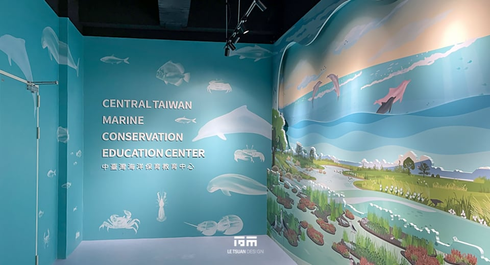
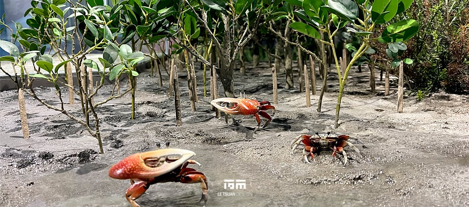
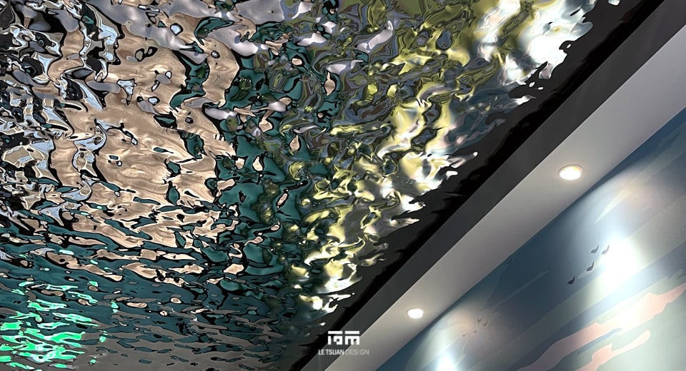

親海知海 中臺灣海洋保育教育中心
「親海知海」中臺灣海洋保育教育中心，以中華白海豚與中臺灣沿海生態為敘事核心，將原有的餐廳空間改造為兼具展示、教育、辦公與公共活動功能的海洋保育教育中心。麗荃室內裝修擔任本案統包規劃設計與工程施作，整合空間規劃、展示設計與製作、科學教室、無障礙改善及機電工程，讓海洋保育的知識從展覽內容延伸到空間本身。
從餐廳到海洋保育教育中心
中臺灣海洋保育教育中心於2024年9月於國立自然科學博物館地球環境廳2樓正式開幕，由海洋委員會海洋保育署委託建置，約330㎡室內空間整合教育中心、辦公區域、展示區域、科學教室，以及龍虎池半開放空間，讓參觀者可以從觀看展示開始，進一步進入互動、學習與討論。麗荃室內裝修從既有建築條件出發，重新整理空間動線與使用機能，並同步處理展示、機電、無障礙與施工條件，讓設計概念落實於現場。
保育的迫切性
本案是海洋委員會海洋保育署「向海致敬——臺灣海域生態環境守護計畫」下的第三座海洋保育教育中心，前兩座分別位於臺南與澎湖。中臺灣沿海是極度瀕危中華白海豚的重要棲地，也分布著多處重要濕地。這些海岸、河口與濕地彼此連結，也與人們的生活緊密交織，因此展示從白海豚出發，逐步拉開到棲地、河口、濕地，最後回到人與海洋的關係，讓參觀者理解白海豚的生存狀況與整個海洋環境息息相關。
讓白海豚成為海洋信差
展示以「海洋野生動物重要棲息環境」與「濕地保育」為兩大主軸，並以「海洋信差」作為敘事主題，參觀者跟隨白海豚穿越牠所生活的海域：從環境變遷切入，認識白海豚的生活史與棲地，再逐步進入中臺灣沿海的河口與濕地，最後回到人與海洋之間的關係。展示在旅程最後留下「保育與開發如何取得平衡」的思考空間，而不急著給出單一答案。
視角設計
空間視角設計呼應展示敘事的節奏：入口以接近空拍的鳥瞰視角建立整體環境概念，隨著動線深入，逐漸轉換為平視、仰望與遠眺等不同觀看方式，觀看尺度也從廣闊的海域逐步縮小至濕地、河口與生物個體，讓參觀者在不同尺度的空間經驗中建立對棲地的理解。
展示手法與互動裝置
入口以輕盈、潔淨且具有層次的視覺語彙建立第一印象，以層景式櫥窗將海洋與棲地的意象帶入室內。展場中段結合多媒體展示與互動教具，讓濕地、河口與海洋生態等較為抽象的知識能以操作方式理解；動線末端規劃多功能階梯活動區與閱讀角落，提供團體參訪、播放影片、課程活動與自主閱讀等不同使用方式，並設有互動裝置讓參觀者親手繪製屬於自己的白海豚。
教育機能
空間規劃同步納入創齡學習、語言對照、科技輔具與近用設計，讓不同年齡、背景與使用需求的參觀者都能找到適合自己的閱讀與學習方式。科學教室進一步將展示內容延伸至實際課程，透過動手實驗、探索活動與食魚教育等教學內容，讓參觀者從展示空間獲得的知識延伸到課程學習，理解海洋環境與日常生活的關係。
識別與色彩設計
整體識別以黑體與圓體字為基礎，透過筆畫細節的變化，呈現俐落但不失親和力的中性風格。標誌以拱形線條為核心符號，取材自海洋流動與陽光穿透水面時的折射層次，串連「海洋生態」「森川河口」「淨化保育」三個主題意象。色彩以具有光感的漸層為主，模擬自然光穿透水面的變化，主色調涵蓋海洋、水流、濕地、河口與光感五種色彩；展場內各子題icon延續同一組圓弧造型，讓不同展示單元在視覺上保持一致，也協助參觀者辨識主題脈絡與動線。
#0F3D44
#2F8F8A
#7FB9A8
#D9CDB3
#C98F4A
工程挑戰
這個空間原本是一間餐廳，要改造成符合博物館使用條件的教育與展示場域，工程團隊必須先處理既有空間拆除後留下的結構、漏水、機電、消防、無障礙及施工動線等問題，這些工程是後續展示內容得以進場的前提。
地坪落差與漏水
既有餐廳拆除後，地板被拆至結構層，室內與外部走廊產生超過7公分的高差，部分樓地板也在拆除過程中受損。進場後另發現建築物伸縮縫漏水，經多次排查，確認源頭並非伸縮縫本身，而是花圃外側一處落水頭的接觸面。地坪高差委由營造廠重新施作補正，漏水則從源頭修復，作為後續室內工程的穩定基礎。
空調機房：同時處理防火與噪音
辦公區域緊鄰中央空調機房，因此除了空間配置，也必須處理機房所產生的噪音與消防條件。隔間採矽酸鈣板搭配60K岩棉輕隔間與低甲醛板材，達到一小時防火時效，並於機房側增設隔音材料，降低設備運轉所產生的震動與噪音，使辦公區域能維持適當的工作環境。

一場牽動全館的無障礙檢討
本案申請變更使用執照及室內裝修送審後，無障礙條件也成為整體工程的重要課題。原有男廁重新配置，調整入口位置，拆除不符需求的洗手台與小便斗，重新整理設備數量與間距，並新增幼童使用的小便斗及無障礙扶手。無障礙廁所則因既有開口條件不足，需要重新調整門框及牆面，施工安排於休館日進行，使用重型機具切除既有門框與牆面再重新補齊，使施工不影響博物館正常開館期間的參觀動線。審查範圍也延伸至無障礙停車位、電梯及地面標示。原有直通樓梯的梯高與梯面條件無法直接符合現行需求，又涉及既有結構安全，最終以輪椅升降設備改善垂直通行條件。
把拆除剪斷的線路重新接起來
前期拆除工程將牆面插座及部分線路截斷，原有迴路無法接續，全區電力系統須重新配拉。辦公室新增茶水空間，同步配置給排水管線；科學教室因規劃食魚教育課程，為電磁爐加裝獨立迴路，並重新配置對應的給排水系統。
不影響開館的物料動線
博物館需維持正常開館，地坪重建所需的水泥砂漿若經館內公共動線運送，會直接影響遊客。工程團隊因此拆除樓上一扇玻璃窗，以捲揚機將材料直接從室外吊運上樓，使博物館原有的展廳動線完全不受施工影響。
五個展示單元
01 森川里海及河口生態——從「里海」一詞與「里海倡議」的概念出發，解說中臺灣西部海域及沿岸如何同時是人類生活的場域，也是中華白海豚、露脊鼠海豚的重要棲息地，呈現人與自然和諧共生的樣貌。
02 臺灣鯨豚情報牆——由「鯨豚出沒點地圖」、「白海豚觀測季報」及「露脊鼠海豚擱淺回報」三個展區組成，每季更新臺灣周遭海域的鯨豚情報。
03 濕地生態——以模型呈現中部重要濕地的環境樣貌，搭配擱淺海豚標本、濕地常見螃蟹標本，以及候鳥、猛禽等標本，展現濕地作為多元棲地的樣態。
04 重要棲息環境的海豚——以巨大桌面呈現白海豚與露脊鼠海豚兩個重要物種的生活史知識，上方懸掛1:1海豚模型與骨骼標本，為中心的重點展示單元。
05 龍虎池：三隻有名字的白海豚——打造水幕，於龍虎池上方放置三隻以海保署編號命名的白海豚模型：OCA001「山茶花」、OCA004「噴泉」、OCA008「草莓牛奶」，作為整座教育中心「海洋信差」敘事主題的具體呈現。
設計總結
這個案子涵蓋既有餐廳改造、展示敘事、視覺識別、互動教育、無障礙、機電與工程施作，需要多個專業環節同步作業，才能讓一座海洋保育教育中心真正運作。麗荃室內裝修從空間與展示的整合出發，將中華白海豚、濕地、河口與人類生活之間的關係，轉化為可以觀看、閱讀、操作與體驗的空間。2024年9月啟用後，中心獲中央社、NOWnews今日新聞與國家地理雜誌等媒體報導。
有專案想討論？
聯絡我們

